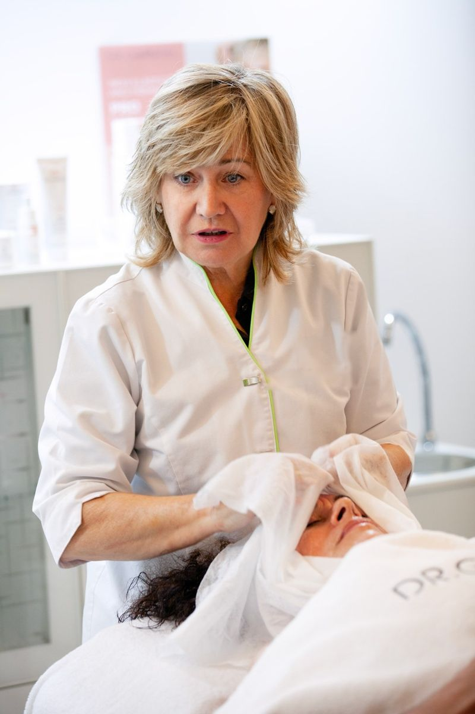
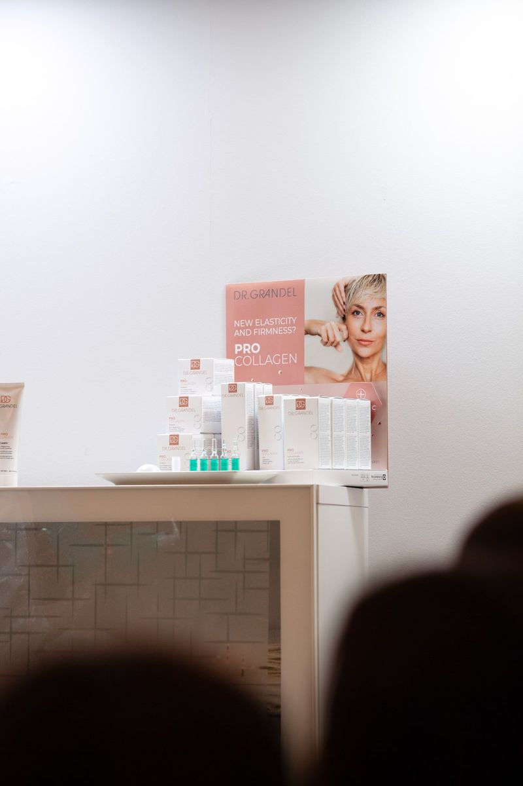
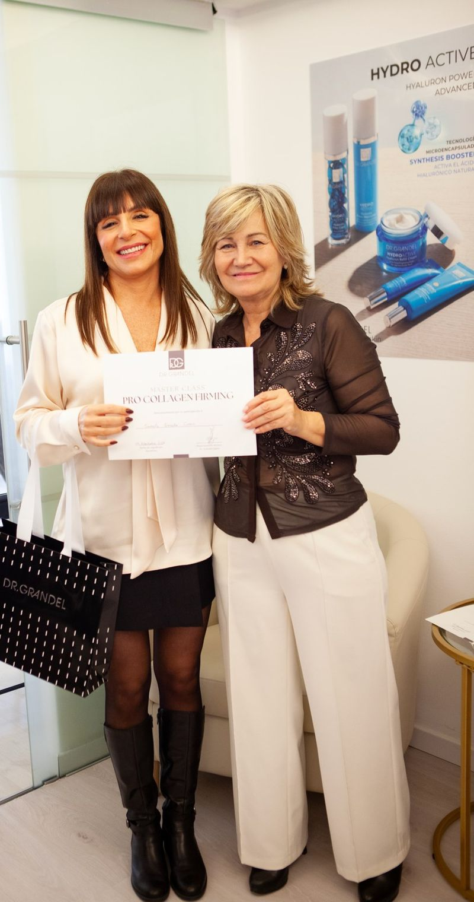

Soporte a tu lado
No te dejamos a solas con la caja
Una línea se vende bien cuando el equipo la entiende. Formamos a tus profesionales en el protocolo y en la prescripción, y seguimos a tu lado después de la primera sesión.
Formación en el protocolo
Práctica del tratamiento de cabina Timeless, paso a paso y con el masaje que lo hace diferente.
Formación en prescripción
Las tres preguntas que eligen la crema correcta y cómo construir la rutina sin que los activos se pisen.
Vademécum profesional
Una guía de consulta escrita para el profesional, no para la clienta, con el consejo que cierra cada venta.
Acompañamiento directo
Un interlocutor en España que conoce la línea por dentro y responde cuando lo necesitas.



